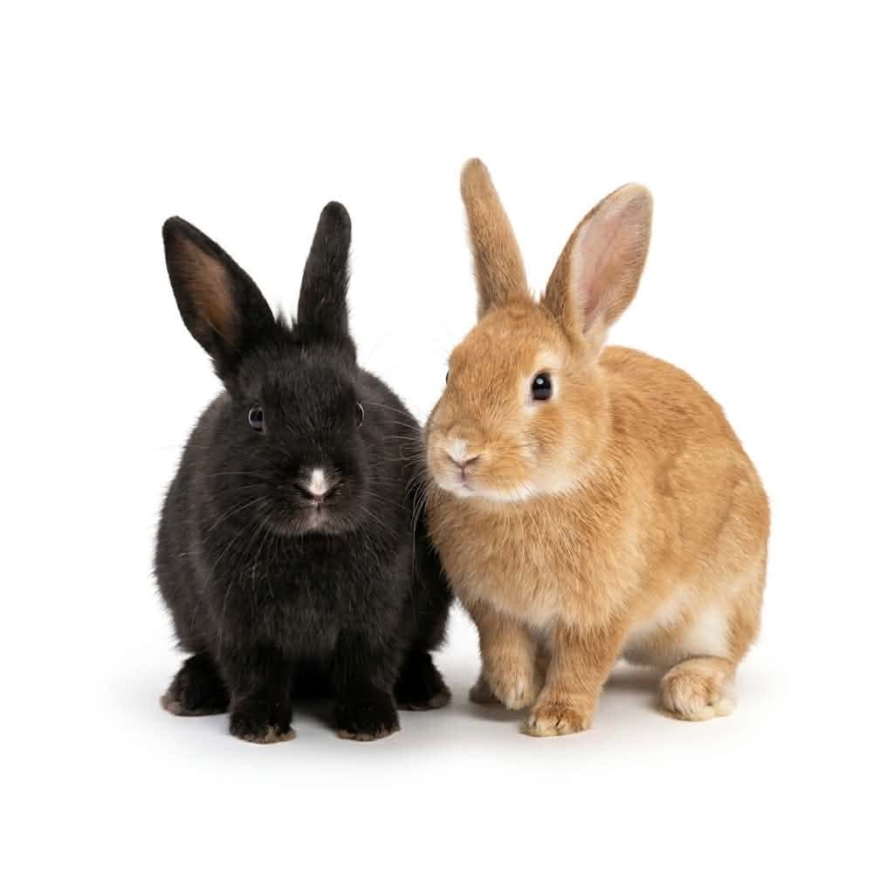
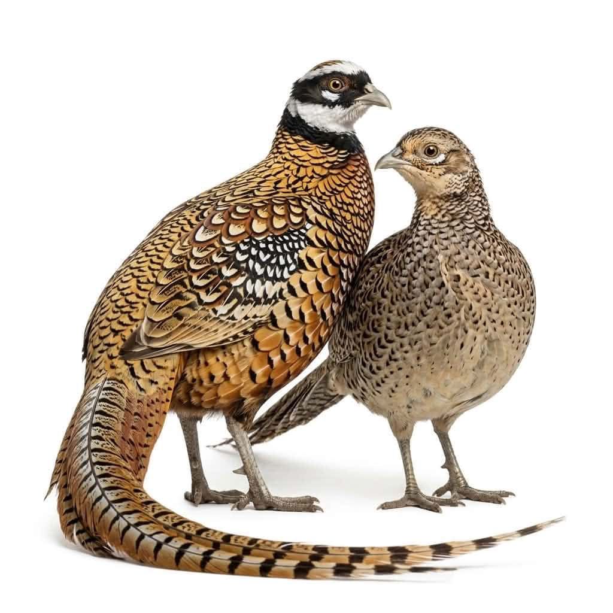
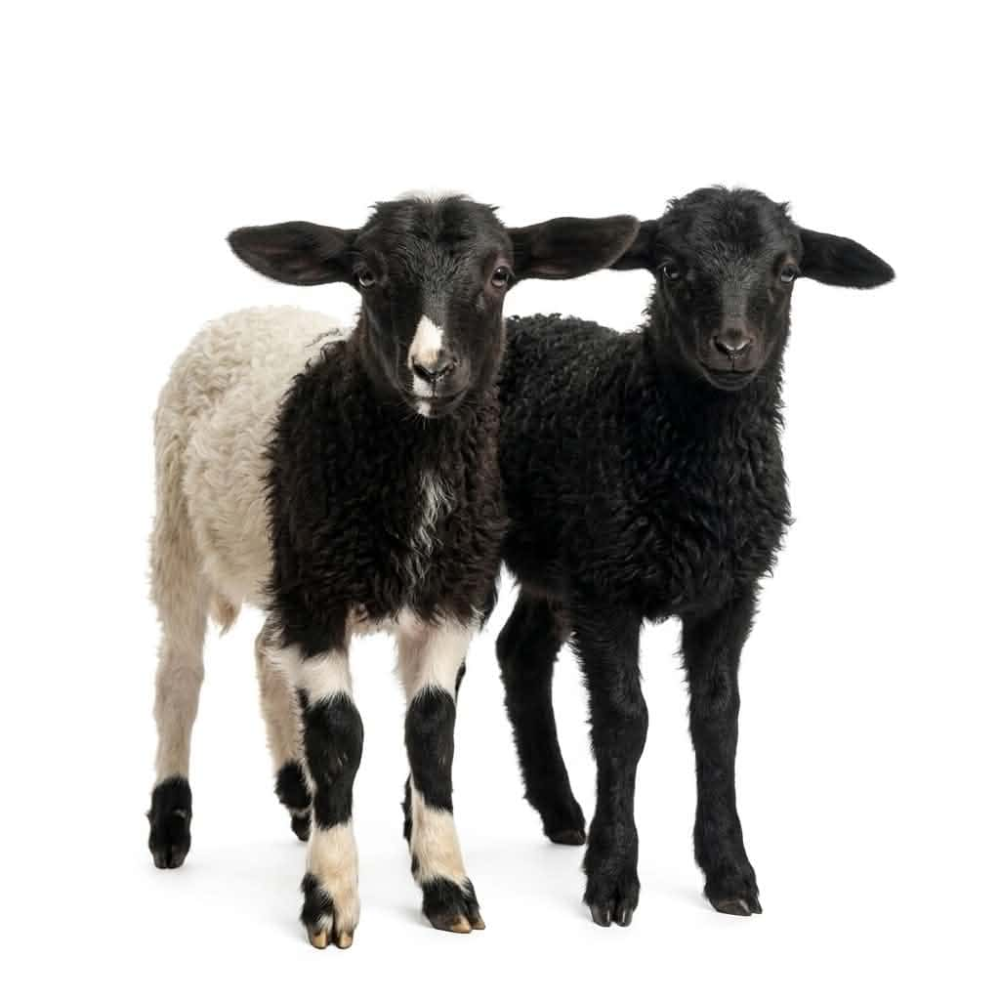
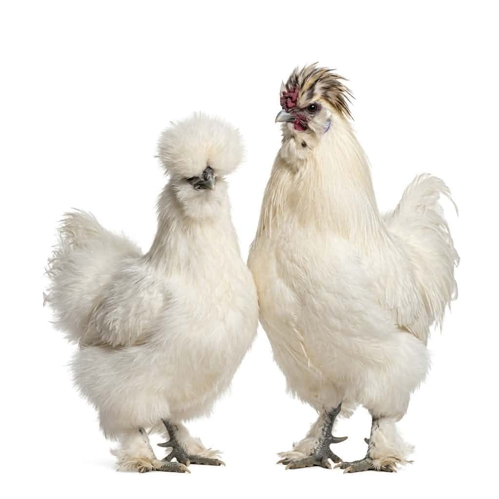

ცხოველების გაცნობა
ნახეთ სხვადასხვა ცხოველი უსაფრთხო და მეგობრულ გარემოში.
კონტაქტური ფერმა თბილისში, სოფელ დიღომში
ლუკას ფერმა არის მყუდრო ადგილი, სადაც თქვენ და თქვენს პატარებს შეგიძლიათ ნახოთ სხვადასხვა ცხოველი და ფრინველი, გაიგოთ მეტი მათ შესახებ და მონაწილეობა მიიღოთ სხვადასხვა შემეცნებით აქტივობაში.




ლუკა და მისი ოჯახი მზად არიან, გიმასპინძლონ თავიანთ ფერმაში, სადაც დიდებს და პატარებს უამრავ საინტერესო აქტივობაში შეუძლიათ მონაწილეობის მიღება.
ვიზიტში შედის:
აქტივობები
ფერმაში სტუმრებს შეუძლიათ ცხოველების ნახვა, გაცნობა და ბუნებაში მშვიდი დროის გატარება.
ნახეთ სხვადასხვა ცხოველი უსაფრთხო და მეგობრულ გარემოში.
შესაძლებელია ზოგიერთი ცხოველის გამოკვება ფერმის წესების დაცვით.
გადაიღეთ ფოტოები ოჯახთან, მეგობრებთან და ცხოველებთან ერთად.
გაატარეთ მშვიდი დრო ქალაქთან ახლოს, ბუნებრივ გარემოში.
მონახულება
ვიზიტისთვის სასურველია წინასწარ დაკავშირება. აქ შეგიძლიათ დაამატოთ სამუშაო დღეები, საათები, მისამართი და ფასი.
კონტაქტი
აქ ჩაწერეთ ლუკას რეალური ტელეფონის ნომერი, Instagram, ელფოსტა ან დაჯავშნის ინსტრუქცია.